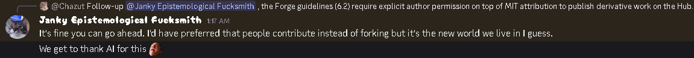

ORBIT
- Downloads
- 23,347
- Favourites
- 196
- Mod lists
- 293
⚠️ Heads up: ORBIT is built on Phobos‘s foundation (MIT-licensed). Full credits at the bottom. ORBIT wouldn’t exist without Janky’s work 🙏
ORBIT - Objective-driven Raid Bot Intelligence Tactics
Smarter bots. Real objectives. Raids that feel alive.
Bots in your raids no longer just patrol and shoot. With ORBIT, they have goals: rich loot spots to clear, PvP hotspots to hunt, quest triggers to visit, and a real reason to head for extract. They coordinate, loot together, and leave when they’re done - just like players.
Built on Phobos’s foundations (advection field, cell dispatch, squad movement), with a custom looting layer on top of Big Silly Goose vanilla APIs (originally inspired by LootingBots, now fully rewritten) and quest routing inspired by QuestingBot (but A LOT simpler, no code reuse) - all rebuilt as a single coherent system instead of three layers fighting for control.
It started as my own personal “best of the three” - picking the parts I liked from each and gluing them together. Along the way it grew well beyond that, into something I’m proud enough of to share.
Pair it with the latest Raid Review to see what every bot was doing on the post-raid map replay.
Questions, bug reports, feedback: ORBIT Discord thread.
Every bot squad in your raid rolls a small list of goals at spawn:
- Loot a rich zone - clean out a high-value area, room by room
- Hunt for fights - anchor a known PvP hotspot, prowl for kills
- Run a quest - visit a real EFT quest trigger like a player would
How they pursue those goals depends on their SAIN personality:
- Rats / Cowards - careful, low-risk, loot a lot, extract early
- Average - balanced, will do a bit of everything
- Chads / GigaChads - aggressive, hunt PvP, skip cheap loot, push extracts
- Timmys - wander a bit, make weird picks, get to the wrong room sometimes
Squads coordinate: the leader picks the target, the rest spread to nearby loot or cover. They open locked doors (sometimes), chain-loot adjacent containers, and credit the right teammate when the corpse needs looting.
They extract when one of three things happens: they’ve looted enough money, they’ve finished all their goals, or the raid is getting late.
Each squad’s main objectives live in cells on the map (a coarse grid). Once the squad’s leader picks an anchor, the rest of the system works in two layers:
Main anchor - the squad’s current focus. One member (the leader by default) walks straight to it. For a Kills main this is a PvP hotspot; for a LootValue main it’s a specific high-value POI in the target cell; for a Quest main it’s the trigger point of a real EFT quest.
Splinter targets - while the leader handles the anchor, the other members fan out to nearby POIs inside the same cell (loose loot, corpses, containers, synthetic patrol points). Each splinter is picked around the member’s own position with a random reservoir sample, so a 4-PMC squad naturally ends up working a small area without all stacking on one spot. A splinter is kept across anchor flips if it’s still in range of the new anchor - bots don’t yo-yo between random POIs when the leader chain-loots the next container two metres away.
Own-kill credit - when a squad scores a kill, the specific member that landed it is the one routed straight to the corpse on the next dispatch, not a random teammate. The killer loots the body they dropped.
Coverage roll - on entering a high-value loot cell, each POI inside the cell rolls against the squad’s coverage value (per-personality: Cautious 85-95%, Average 65-75%, Aggressive 50-60%, GigaChad 30-45%). POIs that lose the roll are quietly skipped so the squad never vacuums the room 100%, like a real player who missed a few items.
The looting layer is custom, built straight on top of Big Silly Goose’s vanilla bot pickup APIs. It handles containers, corpses and loose world items, with a focus on making the bots feel like real players rather than vacuum cleaners.
Per-bot value gate (PMCs and PlayerScavs)
- Each PMC has its own loot threshold rolled from its SAIN personality: Chad ~15k/slot, Average ~10k/slot, Cautious (Rat/Coward) ~5k/slot, GigaChad ~20k/slot, Timmy 0 (everything goes). PlayerScavs fall back to a 5k default.
- Value is judged per inventory slot (handbook price ÷ item size), so a tiny key worth 50k beats a 60k backpack that takes 15 slots.
- A Chad walking past a 5k mag won’t bother; a Rat in the same squad will happily grab it.
Bot scavs: opportunistic random pickups
- AI scavs don’t use a value threshold. They roll a per-item dice (default 30% chance to grab) - matches the vanilla feel where scavs pick up the odd item but don’t deliberately empty a corpse.
- PlayerScavs are excluded from this and use the PMC-style threshold path.
Smart squad memory
- When a Chad opens a container and rejects everything, the same POI is added to his personal skip list - he won’t be sent back. His Chad teammates also skip it (same threshold). But the squad’s Rat can still be dispatched there and clean up what the Chad refused.
- The squad’s own blacklist (a hard “we’re done here”) only triggers when items were actually taken, when the POI was empty, or on transaction failures - never on a pure value rejection.
Always-pick items
- Currency stacks, frag grenades, and dogtags bypass both the value gate and the scav random roll. A real player never walks past a dogtag.
Realistic search timing
- Containers play an open/close animation (~2.5s) with the bot kneeling in front of the lid.
- Corpses are drained on two interleaved tracks: a visible track (helmet, weapons, scabbard, etc., grabbed sequentially with ~0.8s between each) and a search track (vest, armour, backpack, pockets, one slot at a time with progressive per-item reveal: 1.5s initial + 0.4s per extra item, capped at 8s).
- Slot order is randomised so the bot doesn’t always go backpack-first, vest-second, pockets-third.
- Loose items trigger the kneel-and-grab animation per pickup.
Drain order
- Items inside grid containers (wallets, money cases, rigs, backpacks, pockets) are emptied inside-out: cash and contents first, then the empty wrapper.
- Weapon + mods chains drain root-first (the weapon itself, then any detachable mods), same for armour + plates.
Mod filtering on weapons
- Only attachments flagged as “removable in raid” (scopes, mags, grips, silencers, foregrips, mounts, charging handles, dust covers, sights, lasers, lamps) are considered. Barrels, buttstocks, handguards and receivers are dropped from the queue - nobody disassembles a rifle mid-firefight.
Corpse exclusions
- PMC corpses keep their melee weapon (Scabbard slot) on the body, same as live EFT. Scav corpses are fully lootable.
- Secured containers are never touched, on any corpse.
Chain-loot sweep
- After successfully looting a POI, the bot looks for nearby loose items or corpses within a short radius and chains to them directly - mirrors the way a player picks up adjacent items before walking away.
- Same-floor preference: a candidate two metres away on the floor above loses to one ten metres away on the same floor, so the bot doesn’t yo-yo between basement and lobby on Resort.
- Each sweep candidate gets its own coverage roll.
- Install dependencies first:
- BigBrain by DrakiaXYZ
- Waypoints - Expanded Navmesh
- SAIN
- Extract the zip in your SPT root folder.
- Launch the game. You’ll see
ORBIT 1.0.0in the bottom-left version label when it’s loaded.
All tuning lives in the F12 menu - open it in-game and tweak live.
Two recommended SAIN tweaks:
- Tweak SAIN personality chances (see the next tab).
- Disable SAIN’s extract layer so it doesn’t fight ORBIT’s extract logic. Open
BepInEx/plugins/SAIN/Presets/<your_preset>/GlobalSettings.jsonand set:
"Extract": {
"SAIN_EXTRACT_TOGGLE": false
}
ORBIT was tuned around a specific personality distribution. SAIN’s own defaults work fine, but if you want raids that match what I tested against, go into SAIN’s F12 config under Personality → Assignment and set:
| Personality | Chance |
|---|---|
| Rat | 10 |
| Wreckless | 5 |
| SnappingTurtle | 5 |
| Coward | 5 |
| Chad | 5 |
| Timmy | 3 |
| GigaChad | 3 |
Set Can be randomly assigned to True for each one.
This gives roughly a third of your PMCs interesting personalities - the distribution ORBIT was built around.
Note for Twitch Player users: Twitch Player sets several personalities chance to 0 by default, so it’s important to apply the SAIN settings as above.
ORBIT supports only one other AI mod: SAIN and is REQUIRED
Any other AI / bot-behaviour mod will either fight ORBIT for control or duplicate work it already does. Don’t install them alongside ORBIT.
- QuestingBots actually simulates quests - bots plant items, hold zones for the required time, etc.
- ORBIT is simpler: bots just route to the quest trigger location, no real quest mechanics.
- Both want to assign the same bot a quest at the same time → conflict. Pick one.
- ORBIT is built on Phobos’s foundations, same advection field, same cell dispatch logic, same squad movement model. Running both means two systems trying to move the same bots.
- ORBIT has its own loot pipeline driving Big Silly Goose vanilla pickup APIs, with per-personality value thresholds. Running both means two systems racing to loot the same containers.
Any other “AI overhaul” mod
- If a mod replaces bot brain logic, dispatches bots somewhere, or controls looting / extracting / questing, assume it conflicts unless proven otherwise.
AI Limiter / Bot Culling mods
- Anything that deactivates, pauses, freezes, or culls bots while they’re still alive (typically to save CPU when bots are off-screen) breaks ORBIT’s core loop. ORBIT relies on every squad running their full lifecycle in the background: patrolling, looting, fighting, extracting, even when you’re nowhere near them. The moment a bot gets deactivated mid-objective, it never reaches the next waypoint, never engages, never extracts. No support planned on the ORBIT side for now, a built-in degraded-tickrate option for off-screen squads is on the roadmap as a potential future workaround.
Bots freeze / stand still / weird behaviour
- Check for AI-limiter / bot-culling mods (see Unsupported Mods).
- If you’ve extended raid duration via SVM, RaidOverhaul, Custom Raid Times etc., test with vanilla raid times. Long raids have been reported to cause odd bot behaviour.
- If you have ABPS, worth trying to delete its config file and let it regenerate from defaults. A stale ABPS config has been reported to clash.
If the above doesn’t help → 50/50 method
The 50/50 method is the canonical SPT way to pin down a mod conflict: disable half your mods, test the raid, see if the issue persists, split again, repeat until the culprit is isolated. Tedious but reliable.
If you’re going to report the issue
Quoting Shynd:
When reporting aberrant behavior to a mod dev it is best to do so with a much smaller subset of your normal mods — for ORBIT I would have just ABPS / SAIN / ORBIT — and with nothing changed in SVM or anything else. Each individual person here has a functionally unique mod pack. Let’s try to make it as similar as possible before trying to help fix issues that may only occur for you specifically.
So before pinging me: try to reproduce the issue with just ORBIT + SAIN + BigBrain + Waypoints + ABPS and default configs across the board. If the issue still reproduces there, then I have something I can actually act on.
Still stuck?
Drop by the ORBIT thread or the SPT 4.0 support channel.
Spawn / loadout mods are fine and actually recommended, they shape who spawns and what gear they bring, while ORBIT decides where they go and what they do. The two layers don’t fight each other.
No ETA, no promises, but on the list:
Behaviour
- Squads can decide to camp + ambush instead of always roaming
- Smarter movement - checking corners, scanning the rear, less straight-line dashing
- Less static regrouping (bots are easy 1-taps while waiting for squadmates)
- Post-combat self-heal if meds are in inventory
- Squad splitting with radio comms
- New personalities
- Crouch when looting a body in the open to minimise silhouette
- Weapon-type → behaviour archetype hint (CQB-leaning loadout pushes harder, sniper loadout stays back) driven by MOA + RPM + scope presence, biasing POI selection so a Mosin squad doesn’t get routed into Resort interiors
- Cross-raid player-movement heatmap: aggregate the player positions raid-review already logs into a per-map occurrence map, then weight squad dispatch toward those hotspots so the side routes a player habitually rats through stop being safe over time (suggested by Fiodor on Discord)
- A proper in-ORBIT AI limiter for off-screen / far-from-player squads
- Investigate why extended raid duration breaks bot behaviour. Users running SVM / RaidOverhaul / Custom Raid Times with longer-than-vanilla raid lengths consistently report bots going inert, freezing, or behaving erratically (multiple reports). Currently in Troubleshooting as a “test with vanilla raid times first” recommendation, but the underlying cause isn’t understood. Worth tracing what state ORBIT (or a dependency) accumulates over time that fails past the vanilla window
Objectives
- “Marked-key loot rush” for high-tier squads
- “Spawn rush” for the most aggressive personalities
- “Boss hunting”
- Faction-vs-faction “hunt” objective: a squad actively seeks out another faction’s bots instead of just roaming. Enables rivalries like cultists hunting PMCs, UNTAR hunting scavs, or ISB ↔ Black Division hunting each other. Doubles as a robustness win for custom/vanilla bots whose stock SAIN/Big Silly Goose nodes sometimes freeze and stop moving (suggested by Firefly on Discord - ISB author)
- Airdrop / helicopter crash / BTR objectives: squads slow-approach the drop zone, hold position at a nearby vantage for a few minutes (ambush window), then close in and loot. Mimics how players treat airdrops in live, nobody walks straight to the smoke.
- “Rally flare” item: firing it immediately overrides the current objective of every bot alive on the map and sends them converging on the spot it was fired (a hard redirect, not a soft advection nudge). A player-triggered “pull the whole map onto this point” tool, kept separate from the airdrop system so calling a drop never aggros the whole lobby
- Multi-step objectives (activate → loot/extract):
- Interchange Kiba (disable alarm → loot)
- Interchange ULTRA (power on → loot)
- Interchange Object #21WS keycard container (power on → loot)
- Interchange Object #11SR room (power on → toilet switch → loot → extract inside)
- Customs scav-base exfil (power on → extract)
- Reserve bunker exfil (switch → extract)
- Reserve D-2 (switch 1 → door switch → extract)
Extracts
- WorldEvent exfils (Reserve / Customs switch-gated)
- Train exfil (Armored Train availability window)
- “Drop backpack” exfils (Empty / EmptyOrSize) - usable when bot has no backpack, OR wounded bots drop the bag and use them anyway
- HasItem (RedRebel-style - bot must own a Red Rebel in inventory, ignore the paracord and WearsItem gear constraints entirely)
- Chance roll on whether a squad will use the car / V-Ex (SharedTimer) exfil
Looting
- Post-loot inventory sort so the grid stays usable as the bot fills up
- Stack-aware pricing (currency / ammo stacks evaluated as bulk value, not single-unit)
Tuning
- Faction takeover split: patrols → ORBIT, checkpoints → vanilla (RUAF / UNTAR / BlackDivision)
- Per-map ORBIT toggle: enable/disable ORBIT map by map
- Flip the faction-control model to opt-IN instead of opt-OUT, ORBIT only controls explicitly enabled bot types, safer for future custom-bot mods
Animations / polish
- Keycard / key swipe animation for PMC bots opening locked rooms (currently they call the Unlock function instantly with no anim, should walk to the reader and play the swipe like a player). Attempted but doesn’t work yet, so it’s parked for now (low priority)
- ORBIT is still young and has rough edges. Bug reports and feedback on the Discord thread are very welcome.
- Most Reserve exfils require switches ORBIT doesn’t operate yet - bots there mostly stay until killed or raid end.
- Bots walk into minefield - the rebuilt POI generation doesn’t exclude minefield zones yet, so bots can be routed straight into them. Fix planned.
- Possible interaction with CactusPie’s “Transfer Loot Into Container Automatically” mod - reported symptom: items a bot loots end up in YOUR tagged containers (SICC case, etc.). Best theory at the moment is that ORBIT routes pickups through Big Silly Goose vanilla APIs (same path as the player), so a mod hooking those APIs may end up applying its logic to bot pickups too. Investigating.
- Faction-mod takeover (RUAF / UNTAR / Black Division) can misbehave - these mods swap the bot’s brain at runtime (via MoreBotsAPI) and ORBIT’s handling of that handoff is not fully solid yet, so a controlled squad may rapidly switch goals or get stuck. Workaround: leave the per-faction takeover toggles OFF (their default) so ORBIT leaves those bots vanilla. Fix in progress.
- Rare stuck bots - usually unstick themselves within a minute. Still iterating.
- Mod conflicts - tested with my own config. Yours may differ. Report anything obviously broken on GitHub.
I want to be upfront: I used Claude as a coding assistant on this mod.
That doesn’t mean it’s vibe-coded slop. I spent days reading the source of Phobos, and built custom debug overlays in Raid Review so I could see what every mod was doing per-frame before writing a single line of ORBIT. I’m the architect; the LLM is a productivity tool - same as a senior dev using Stack Overflow doesn’t make them a fraud.
I have 10+ years of professional dev experience. I know what I’m shipping.
If that’s a dealbreaker for you, I understand - uninstall and move on, no hard feelings. If you can judge a mod on what it does rather than how it was written, give it a try.
A huge thank you to the authors listed below.
- Phobos by janky - the original advection-field cell dispatch that ORBIT is built around (MIT, used with explicit permission - see screenshot below).
- QuestingBot by danW - inspired the quest-routing concept, no code reused.
- LootingBots by Skwizzy and ArchangelWTF - ORBIT started out as a Phobos + LB merge; over time many features were added and the looting layer was rewritten from scratch on top of Big Silly Goose vanilla APIs to fit ORBIT’s design better. No LB code left in the current release.
- SAIN by Solarint, ArchangelWTF and DrakiaXYZ - without it, no personality system to plug into
- BigBrain by DrakiaXYZ
- The SPT team for an amazing modding framework
- The SPT Discord
- You, for trying the mod
Phobos authorization from Janky:

If ORBIT made your raids more interesting and want to support my work, feel free to buy me a coffee!

All my mods are free and open source. Your support keeps me motivated to create more!
Version
1.2.1
Patch release: fixes the performance issues introduced by 1.2.0, bots walking through doors, and a batch small issues. Huge thanks to everyone who reported and tested the RC builds!
⚡ Performance
1.2.0 could tank your fps (especially on Streets, or near bosses and rogues). Several causes were found and fixed, it should now run at least as smoothly as 1.1.0 did.
🚪 Doors
- Bots no longer walk through closed or locked doors (Labs keycard rooms included). They stop, open the door, then walk through.
- Doors opened by bots now stay open instead of closing again on their own.
🎒 Looting
- Bots now go back and loot their own kills after a fight.
- The rest of the squad keeps moving and looting nearby instead of standing frozen while one member loots.
🚑 Extraction
- “Extract allowed for = None” now blocks all extract types, including emergency and loot extracts.
- Squads no longer walk toward exits they can’t actually reach.
Enjoy 🙂
and thanks again to the reporters and RC testers 🙂
Dependencies
Version
1.2.0
1.2.0 is mostly about what bots do when things go sideways: a wounded bot now extracts itself instead of dying, squads rally to a teammate in trouble, and a whole class of “bot stuck forever” cases are caught and recovered. There’s also a new off-screen performance mode, Combine faction support, and the usual wave of door / looting reliability fixes.
🚑 Solo & emergency extraction
Bots can now leave the raid on their own, two ways:
- Emergency extract → a bot that’s badly wounded and out of usable meds stops trying to fight or loot and heads for the nearest exfil instead of bleeding out where it stands. If it recovers on the way (found a med, or the bleed stopped), it cancels and rejoins the squad. If it can’t reach an exfil, it falls back to regrouping with a living squadmate.
- Loot extract → a bot whose own loot haul crosses its personal value threshold can go to exfill while the rest of the squad keeps playing.
New Emergency extract toggle (section 08, ON by default).
🤝 Squad rally
When a squadmate comes under fire, the rest of the squad now rallies to support them instead of each carrying on with their own thing. Members already in their own fight aren’t pulled off it, and a lone bot doesn’t “rally” itself.
🩹 Bots get un-stuck
Several ways a bot could get stuck permanently are now detected and recovered:
- Bots that spawn on a disconnected chunk of the map (an “island” the rest of the map can’t reach) get teleported back onto it.
- Bots wedged behind their own door get freed.
- Bots stuck on the way to any objective now un-stick themselves.
- Stuck-bot teleports are better at actually un-sticking, and they leave guarding bots on their post alone.
🚪 Doors
- Bots no longer unlock doors from across the map. A locked door a bot needs to get through has its navmesh path opened up front so the bot can walk to it, but the door itself stays locked until the bot is actually standing at it, and only then does it get unlocked.
- Door unlocks are floor-gated so a bot can’t pop a lock through the floor above or below.
The unlock doesn’t play a hand/key animation yet → I took a few swings at it without luck, so I’ve parked it for now. It’s a minor cosmetic detail and there are bigger things on the list, so it’s on the back burner, not dropped.
🎒 Looting
- Squads no longer loop on or get stuck on corpses they can’t finish looting.
- Bots no longer park on a loot spot they can’t actually reach, and a loot objective whose items are all below-threshold now finishes cleanly instead of hanging.
🪖 Factions
- Combine Soldiers are now supported, with their own takeover toggle.
- Bloodhounds get Roaming / Disable-ORBIT toggles, like the Goons.
- ISB fixes → ORBIT now properly drives all ISB’s bots.
⚡ Off-screen performance mode (experimental)
There’s a new opt-in option to throttle squads that are far off-screen, but honestly the gain is very small and I wouldn’t recommend turning it on yet. ORBIT only drives the bots’ high-level decisions → the heavy lifting (combat, aiming, vision, pathfinding, animations) keeps running at full cost no matter what, so throttling ORBIT’s slice barely moves the needle.
I’ll look at building a proper AI limiter into ORBIT down the line → that’s the thing that would actually claw back frames.
⚙️ Settings (F12) → reorganized
The F12 config got a big cleanup. The default view is now short and focused.
All the deep tuning is tucked behind the “Advanced settings” checkbox → there if you want it, out of the way if you don’t.
Tooltips are shorter with examples, and percentage sliders read as 70% instead of 0.7.
New toggles this release: Emergency extract when wounded, Combine Soldiers takeover, Bloodhound Roaming / Disable ORBIT, Quiet logging (on by default, cuts log spam), and an off-screen tickrate option (off by default; honestly minor, see above).
⚠️ Heads up: the F12 config was reorganized, so your existing settings won’t carry over. Because of the refactor, the cleanest update is to delete your old config file →
BepInEx/config/com.chazut.orbit.cfg→ before launching. ORBIT regenerates it fresh with the new layout and sensible defaults. (If you leave it in place the old/renamed entries just sit there unused, but a clean file is recommended.)
Enjoy, and thanks to everyone who reported issues and tested 🙂
Dependencies
Version
1.1.0
This is a big one. 1.1.0 add in-raid gear upgrade system, makes bots far more reliable at doors, looting, multi-floor buildings and extracts, fixes a pile of SAIN personality edge cases, and brings back the player-convergence pull from Phobos (janky).
If you’re updating: just drop the new build in, your existing F12 settings carry over (a couple of options moved or were removed, see Settings changes at the bottom).
✨ Bots now upgrade their loadout
Bots look at what they find on corpses and actually kit themselves up mid-raid. Each piece is compared against what they already have and only swapped when it’s a genuine upgrade:
- Weapons — judged on how the gun actually performs (ergonomics, recoil, effective range, ammo quality, weighted per map), not its price tag. A bot won’t ditch a solid armor-piercing rifle for a flashy but worse shotgun.
- Body armor & helmets — better protection wins.
- Rigs & backpacks — bigger/better carry wins, and the bot moves its current loot into the new one first (it won’t drop your would-be loot on the floor).
- Headsets.
- Ammo & mags — bots keep the mags and ammo that fit their new gun and stop hoarding the rest.
- Stripping — before a bot throws its old weapon on a corpse, it strips the expensive attachments (scope, suppressor, grip…) into its bag first. Kill it afterwards and you’ll find the old gun stripped clean, just like a player would leave it.
Scavs stay scavs: they only grab gear for empty slots, no deliberate upgrading.
🚪 Doors actually work now
Bots used to phase straight through doors. They now stop, open the door (with the animation), and walk through, including rolling to force open locked doors to reach loot behind them. Doors that get stuck mid-animation are cleaned up so they don’t stay broken for the rest of the raid.
🧠 Smarter looting & movement
- Multi-floor buildings — bots clean a floor at a time and stop yo-yoing up and down the stairs. They’ll still wander to other floors naturally, just not on every single pickup.
- Patrol behaviour — bots actually walk to their patrol points instead of teleport-twitching between nearby ones.
- Squad leaders keep moving during “Kill” roams instead of standing guard while the rest of the squad works.
- Corpse looting is tighter — no more grabbing gear from across the room.
- Loot hang fix — a bot that gets stuck on a pickup now unsticks itself instead of crouching in place forever.
- Dead teammate? The squad can grab their dropped gear and re-think whether it’s still worth extracting.
🎯 Better extracts
Bots are much more reliable at actually reaching and using exfils, including tricky underground/hatch extracts. No more bots parking next to an exfil and never leaving.
👤 Personality fixes (SAIN)
Several cases where PMCs all fell back to the generic “Average” behaviour are fixed.
🌍 Player convergence is back
The world gently drifts toward where you actually are, bringing more action around you. Off by default, flip it on in F12 (section 03) if you want it, and there are sliders to tune how strong and how far-reaching the pull is (you can even set it negative to make bots avoid you).
Full credit for this one goes to janky, the original Phobos mod — it’s a port of their convergence system.
🤝 FIKA & faction mods
- FIKA / headless (not officially supported): I took a couple of attempted swings at issues people reported — a crash that could leave a lobby in a broken state, and bots valuing all loot at 0 on headless (now pulling prices from the server instead). These aren’t confirmed yet, so if you run Fika, let me know how it goes.
- Faction mods play nicer: the “Vanilla X” toggles are now clearly named “Disable ORBIT on X”, there’s a new toggle for Raiders, and ORBIT now drives the ISB faction by default (with a toggle to leave them on their own).
Heads up: if you run a bot-spawn overhaul mod (ABPS or other) and your custom-faction bots aren’t spawning, that’s a problem between the spawn-mod and factions mods, not ORBIT.
⚙️ Settings changes
Vanilla scavs / goons / cultistsare renamed to Disable ORBIT on scavs / goons / cultists (same thing, clearer name).- New: Disable ORBIT on raiders, Player convergence (+ scales), Cross-floor splinter chance, Take over ISB bots.
Enjoy, and thanks to everyone who reported issues and tested 🙂
Dependencies
Version
1.0.0
Smarter bots. Real objectives. Raids that feel alive.
PMC squads and PlayerScavs in your raids now roll a list of goals at spawn - loot a rich area, hunt a PvP hotspot, run an EFT quest - and extract when they’re done. Just like players.
⚠️ Note: 1.0.0 is the first public release.
A few rough edges are expected — bug reports very welcome on the Discord thread.
📖 Full docs, SAIN config, roadmap, known issues: See the mod page on the Forge.
🎯 What’s in 1.0.0
- Per-squad long-term objectives (Kills / LootValue / Quest)
- Five SAIN personality archetypes, each with their own tuning
- Brand-new custom looting layer built from scratch on top of Big Silly Goose vanilla APIs:
- Per-personality value thresholds (Chad walks past trash, Rat grabs everything, etc.)
- Bot scavs roll random pickups instead of vacuuming corpses
- Smart squad memory: a Chad rejection doesn’t block a Rat teammate from coming to clean up
- Realistic search/looting timing delays
- Inside-out drain (cash before wallet, contents before container)
- Mod filtering: only attachments removable in raid
- PMC melee bound to the body (Scabbard) - same as live
- Always-pick dogtags, cash, and frag grenades
- Smart extract logic (loot threshold / mains done / time low)
- Public API for Raid Review integration - see every bot’s decisions on the post-raid replay
⚡ Install
🙏 Credits
Built on top of Phobos (used with explicit permission from Janky) and inspired by LootingBots and QuestingBot. The looting layer is fully original code on top of Big Silly Goose vanilla APIs.
Built on SAIN and BigBrain - none of this works without them.